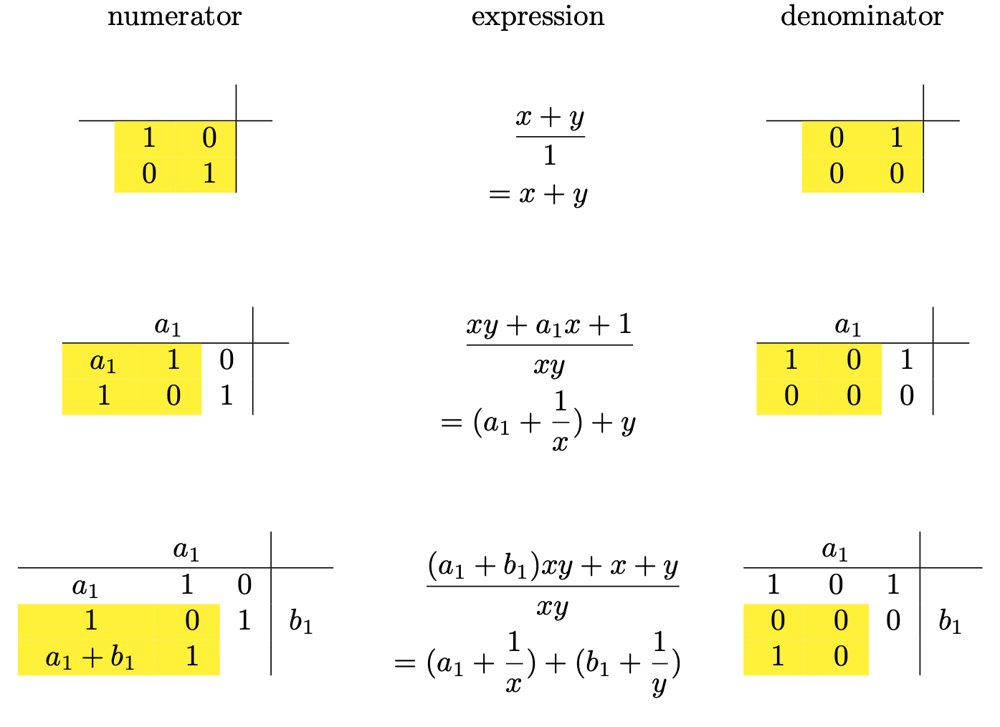
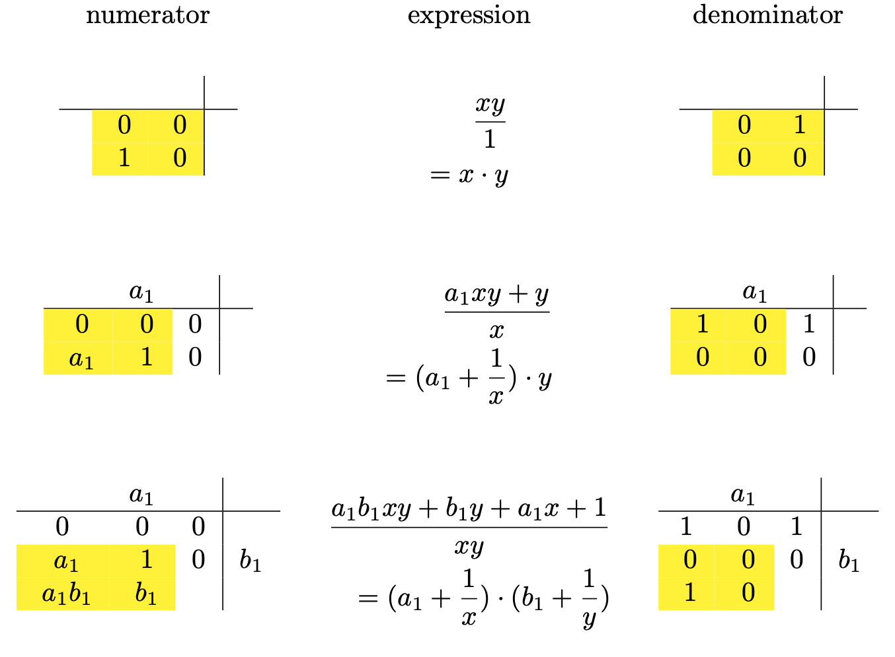

Understanding Bill Gospher's continued fraction arithmetic (implemented in Python)
Table of Contents
- 1. Representing rational numbers as continued fractions
- 2. Calculating the convergents of a continued fraction
- 3. Continued fraction approximation as function compositions
- 4. Calculating convergents using the matrix notation
- 5. Turning convergents into continued fractions
- 6. Simple transformations of continued fractions
- 7. Continued fraction arithmetic - bihomographic functions
- 8. Bihomographic functions - implementation
- 9. Convergents for continued fraction arithmetic
- 10. Appendix: Quotients/remainders for matrices
- 11. Appendix: Quotients/remainders for tensors
- 12. Appendix: Tests
- 13. Appendix: Display utilities
- 14. Appendix: Imports
<<IMPORTS>> <<RATIONAL_NUM>> <<R2CF>> <<CONVERGENTS0>> <<CONVERGENTS1>> <<QR_MATRIX>> <<CF_TRANSFORM>> <<BIHOMOGRAPHY>> <<QR_TENSOR>> <<CF_EXAMPLES>>
1. Representing rational numbers as continued fractions
Since we'll use rational numbers a lot, let's define a class:
class Rational(NamedTuple('Rational', [('a', int), ('b', int)])): """Rational(a, b) = a/b""" def __repr__(self): return f'{self.a}/{self.b}'
How to convert a rational number to a continued fraction? Observing that
\[ \frac{254}{100} = 2 + \frac{54}{100} = 2 + \frac{1}{\frac{100}{54}} = 2 + \frac{1}{1 + \frac{46}{54}} = 2 + \frac{1}{1 + \frac{1}{\frac{46}{54}}} \]
it should be obvious that the solution is just the Euclidean algorithm for finding the greatest common divider:
# Convert a rational number to a continued fraction def qr(a: int, b: int) -> Tuple[int, int]: """a = b * q + r, return (q, r)""" q = math.floor(a / b) # the quotient r = a - b * q # the remainder return (q, r) def r2cf_(rn: Rational) -> Iterator[Tuple[int, int]]: """The Euclidean algorithm for representing a rational number as a continuous fraction. Return an iterator of quotients and remainders""" a, b = rn while True: q, r = qr(a, b) yield b, q if r == 0: break a, b = b, r def r2cf(rn: Rational) -> Iterator[int]: """Represent a rational number as a continued fraction. Return an iterator of integers""" def second(x: tuple): return x[1] return map(second, r2cf_(rn))
Now we can use r2cf to convert a rational number into a continued fraction. In this article, continued fractions are represented by Python generators, because they can have infinite number of terms. However, the generators returned by r2cf are finite iterators because the continued fractions associated with rational numbers always have finite numbers of coefficients.
nc = r2cf(Rational(254, 100)) print(list(nc))
[2, 1, 1, 5, 1, 3]
This means that \[ \frac{ 254 }{ 100 }= 2+\frac{1}{1+\frac{1}{1+\frac{1}{5+\frac{1}{1+\frac{1}{3}}}}} \]
We can display the process in a tabular format. For example:
print(r2cf_tab(Rational(254, 100)))
254 100 2 54 1 46 1 8 5 6 1 2 3 0
This table shows that 2 (the penultimate row) is the greatest common divider of 254 and 100. As a byproduct of this process, we also get the coefficients of the corresponding continued fraction, which are the quotients displayed on the right.
Interestingly, the reciprocal of \(\frac{254}{100}\) (that is, \(\frac{100}{254}\)) is represented by the following as a continued fraction:
nc = r2cf(Rational(100, 254)) print(list(nc))
[0, 2, 1, 1, 5, 1, 3]
It's the same sequence with an additional 0 at the beginning! This is our first clue that a continued fraction can be transformed by performing some operations at the beginning of the Euclidean algorithm. We'll come back to this point later.
2. Calculating the convergents of a continued fraction
Given a continued fraction, how do we calculate its value? If the series is finite, we can easily write a recursive function. However, if it's an infinite series, we need a method to incrementally approximate the value as more coefficients are received. Also, we want the evaluation to be accumulative, so that each update is based on the previous one.
This question has an easy solution if we use a series of rational numbers to approximate the continued fraction. Each term in the series is called a convergent. The formula for the convergents can be derived easily with mathematical induction, and it is implemented below. For the moment, we'll use the formula just a convenience to get the job done. We'll get deeper into its meaning in the next section.
# Calculate the convergents of a continued fraction def cf_convergents0(cf: Iterator[int]) -> Iterator[Rational]: """For a continued fraction cf, return an iterator of rational numbers to approximate it""" p1, p0 = 1, 0 q1, q0 = 0, 1 for a in cf: p = a * p1 + p0 q = a * q1 + q0 yield Rational(p, q) p0, p1 = p1, p q0, q1 = q1, q
For example, for the continued fraction \([2, 1, 1, 5, 1, 3]\), we get
print(list(cf_convergents0(iter([2, 1, 1, 5, 1, 3]))))
[2/1, 3/1, 5/2, 28/11, 33/13, 127/50]
In other words, \(2+\frac{1}{1+\frac{1}{1+\frac{1}{5+\frac{1}{1+\frac{1}{3}}}}}\) can be approximated with \(\frac{2}{1}\),\(\frac{3}{1}\),\(\frac{5}{2}\),\(\frac{28}{11}\),\(\frac{33}{13}\),\(\frac{127}{50}\) .
For convenience, we define a specialized version of cf_convergents0 just for finite-term continued fractions. It returns the rational number corresponding to the continued fraction:
def cf2r0(cf: Iterator[int]) -> Rational: """Given a finite-term continued fraction, return its value as a rational number. This function will get into an infinite loop if the iterator doesn't stop. """ return list(cf_convergents0(cf))[-1]
print(cf2r0(iter([2, 1, 1, 5, 1, 3])))
127/50
Another example: the irrational number \(e\) can be expressed as a continuous fraction by:
# Examples of continuous fractions def cf_e() -> Iterator[int]: """e as a continuous fraction""" yield 2 k = 0 while True: # a finite generator comprehension for i in (j for j in [1, 2 * k + 2, 1]): yield i k = k + 1
It has infinite number of terms, but the series follows a simple pattern. This is just the first 16 terms:
print(list(islice(cf_e(), 16)))
[2, 1, 2, 1, 1, 4, 1, 1, 6, 1, 1, 8, 1, 1, 10, 1]
conv_ = cf_convergents0(cf_e()) conv = list(islice(conv_, 16)) # the first 16 convergents for c in conv: print(f'{repr(c):<20} {c[0]/c[1]:.8f}')
2/1 2.00000000 3/1 3.00000000 8/3 2.66666667 11/4 2.75000000 19/7 2.71428571 87/32 2.71875000 106/39 2.71794872 193/71 2.71830986 1264/465 2.71827957 1457/536 2.71828358 2721/1001 2.71828172 23225/8544 2.71828184 25946/9545 2.71828182 49171/18089 2.71828183 517656/190435 2.71828183 566827/208524 2.71828183
3. Continued fraction approximation as function compositions
Given the first 3 terms in a continued fraction \([5, 1, 4...]\), let \(x\) denote the reciprocal of the value of the remaining series. We can express the convergent as \(f_1(x)\), \(f_2(x)\), \(f_3(x)\)…, where
\begin{equation*} f_1(x) = 5 + \frac{1}{x} \end{equation*} \begin{equation*} f_2(x) = 5 + \frac{1}{1 + \frac{1}{x}} = f_1(1 + \frac{1}{x}) \end{equation*} \begin{equation*} f_3(x) = 5 + \frac{1}{1 + \frac{1}{4 + \frac{1}{x}}} = f_1(f_2(4 + \frac{1}{x})) \end{equation*}Or more compactly, let
\begin{equation*} h(a, x) = a + \frac{1}{x} \end{equation*}then
\begin{equation*} f_1(x) = h(5, x) \end{equation*} \begin{equation*} f_2(x) = h(5, h(1, x)) \end{equation*} \begin{equation*} f_3(x) = h(5, h(1, h(4, x))) \end{equation*}This way, we express the approximation as a recursive process. If the continued fraction stops at the third term, its value is \(h_3(\infty) = h(5, h(1, h(4, \infty)))\). Infinity might seem odd here, but remember that \(x\) is the reciprocal of the rest of the sequence. So it just means that the rest of the sequence evaluates to 0.
Before we rush to translate this into code, let's dig deeper. If we use column vectors to represent rational numbers:
\begin{equation*} \begin{bmatrix} p \\ q \end{bmatrix} = \frac{p}{q} \end{equation*}Then we can turn everything into linear algebra:
\begin{equation*} h(a, x) = a + \frac{1}{x} = \frac{ax + 1}{x} \end{equation*}can be written in our matrix notation as
\begin{equation*} \begin{bmatrix} ax + 1 \\ x \end{bmatrix} = \begin{bmatrix} a & 1 \\ 1 & 0 \end{bmatrix} \begin{bmatrix} x \\ 1 \end{bmatrix} \end{equation*}Furthermore,
\begin{equation*} f_3(x) = h(5, h(1, h(4, x))) \end{equation*}can be written as
\begin{equation*} \begin{bmatrix} 5 & 1 \\ 1 & 0 \end{bmatrix} \begin{bmatrix} 1 & 1 \\ 1 & 0 \end{bmatrix} \begin{bmatrix} 4 & 1 \\ 1 & 0 \end{bmatrix} \begin{bmatrix} x \\ 1 \end{bmatrix} = \begin{bmatrix} 29 & 6 \\ 5 & 1 \end{bmatrix} \begin{bmatrix} x \\ 1 \end{bmatrix} \end{equation*}So, the 2-by-2 matrix
\(\begin{bmatrix} 29 & 6 \\ 5 & 1 \end{bmatrix}\)
represents a function that approximates a continued fraction with more terms. If the continued fractions has only 3 terms, we terminate the process by evaluating
\begin{equation*} \begin{bmatrix} 29 & 6 \\ 5 & 1 \end{bmatrix} \begin{bmatrix} 1 \\ 0 \end{bmatrix} = \begin{bmatrix} 29 \\ 5 \end{bmatrix} = \frac{29}{5} \end{equation*}Multiplying the matrix with \(\begin{bmatrix} 1 \\ 0 \end{bmatrix}\) turns the function into a rational value, which is the first column of the matrix.
4. Calculating convergents using the matrix notation
Now, we are ready to rewrite the formula in cf_convergents0 as matrix multiplications:
# Calculate the convergents using matrix multiplication def h(a: int) -> np.ndarray: return np.array([[a, 1], [1,0]]) def cf_convergents1_(cf: Iterator[int]) -> Iterator[np.ndarray]: """Given a continuous fraction, return an iterator of 2x2 matrices representing convergents""" res = np.array([[1, 0], [0, 1]]) for a in cf: res = np.matmul(res, h(a)) yield res def cf_convergents1(cf: Iterator[int]) -> Iterator[Rational]: """Given a continuous fraction, return an iterator of rational numbers representing convergents""" mLst = cf_convergents1_(cf) for m in mLst: yield Rational(m[0, 0], m[1, 0])
Let's try it on the example given in the previous section:
print(list(cf_convergents1(iter([5, 1, 4]))))
[5/1, 6/1, 29/5]
Here's a longer sequence that we used previously:
print(list(cf_convergents1(iter([2, 1, 1, 5, 1, 3]))))
[2/1, 3/1, 5/2, 28/11, 33/13, 127/50]
A very charming thing that Gosper did was that he used a compact tabulated format to illustrate the process. It's unnecessary for the computation, but I think it looks pretty cool:
print(cf_convergents1_tab(iter([5, 1, 4])))
4 1 5
29 6 5 1 0
5 1 1 0 1
This table is read from the right to the left. The right-to-left direction takes some getting used to, but it's needed to preserve the normal representation of matrices.
The first row represents the coefficients of the continued fraction. To understand the other numbers, we calculate the matrices for each additional coefficient in the continued fraction:
itr = cf_convergents1_(iter([5, 1, 4])) print(next(itr),"\n") print(next(itr),"\n") print(next(itr))
[[5 1] [1 0]] [[6 5] [1 1]] [[29 6] [ 5 1]]
You can see these matrices shift leftwards in the tabular representation, with adjacent matrices sharing a column. To see why, suppose that the current matrix is \(\begin{bmatrix} p & q \\ r & s \end{bmatrix}\), and we have to update it with a new term \(a_n\) in the continued fraction. The updated matrix is
\begin{equation*} \begin{bmatrix} p & q \\ r & s \end{bmatrix} \begin{bmatrix} a_n & 1 \\ 1 & 0 \end{bmatrix} = \begin{bmatrix} a_n p + q & p \\ a_n r + s & r \end{bmatrix} \end{equation*}
This explains the shift, and we have recovered the formula in cf_convergents0.
Here's a longer series:
print(cf_convergents1_tab(iter([2, 1, 1, 5, 1, 3])))
3 1 5 1 1 2
127 33 28 5 3 2 1 0
50 13 11 2 1 1 0 1
As before, we define a specialized version of cf_convergents1 just for finite-term continued fractions.
def cf2r1(cf: Iterator[int]) -> Rational: """Given a finite-term continued fraction, return its value as a rational number. This function will get into an infinite loop if the iterator doesn't stop. """ return list(cf_convergents1(cf))[-1]
5. Turning convergents into continued fractions
In this section, we'll develop code that calculates convergents as in cf_convergent1, but as it happens, we'll also turn them into continued fractions. This seems to be a pointless exercise, because a continued fraction is what we start with! Indeed, at the end of this section, we'll see that the code receives a continued fraction, and just returns the same series. However, this code will become useful in the coming sections.
Let's take the continued fraction \([5, 1, 4... ]\) as an example. Since we already know from the last section that the third convergent of \([5, 1, 4]\) is \(\frac{29}{5}\), can't we just turn \(\frac{29}{5}\) into a continued fraction? It is not as simple as that, because \([5, 1, 4]\) and \([5, 1, 4...]\) are not the same. For the former, the third convergent just a rational number. However, for the latter, the third convergent is \(\begin{bmatrix} 29 & 6 \\ 5 & 1 \end{bmatrix}\), which represents the function \(\frac{29x + 6}{5x + 1}\). To turn it into a continued fraction, we'll need to take the rest of the series, represented by \(x\), into account.
How? The answer is still the Euclidean algorithm, but we have to use it symbolically rather than numerically.
The first step is to symbolically represent the function as a quotient and a remainder (see qr() in r2cf_). I implemented this operation in qr_matrix in the . We can use it on the third convergent:
pp_qr(qr_matrix(np.array([[29, 6], [5, 1]])))
5 5 1 4 1
This means that \(f_3(x) = \frac{29x+6}{5x+1} = 5 + \frac{1}{\frac{5x+1}{4x+1}}\). Why is the quotient 5? Since \(\lim_{x \to 0} f_3(x) = 6\) and \(\lim_{x \to \infty} f_3(x) = \frac{29}{5} = 5.8\), the function is bounded by \(5.8 < f_3(x) < 6\) (note that \(0 < x < \infty\)). The quotient therefore has to be 5.

Now, we are ready to implement the symbolic form of the Euclidean algorithm by calling qr_matrix repeatedly:
def euclid_matrix_(m: np.ndarray) -> Iterator[Tuple[int, np.ndarray]]: """The Euclidean algorithm for the function express by matrix m. Returns an iterator of the quotient and the remainder""" while True: if m[0][0] == 0 and [0][1] == 0: # if there is no remain, stop break else: (q, r) = qr_matrix(m) if q is not None: yield q, r m = r else: # if the quotient cannot be determined, stop break
Let's try it on \(\begin{bmatrix} 70 & 29 \\ 12 & 5 \end{bmatrix}\)
q = euclid_matrix_(np.array([[70, 29], [12, 5]])) for (r, m) in q: pp_qr((r, m)) print()
5 12 5 10 4 1 10 4 2 1 4 2 1 2 0
So there is enough information in \(\frac{70x+29}{12x+5}\) to precisely determine 3 coefficients (5, 1, 4). We stopped at the last term, because \(\frac{2x+1}{2x}\) is an unbounded function, so the quotient cannot be determined.
As before, Gospher stacked the matrices in a compact format to illustrate the process:
print(euclid_matrix_tab(np.array([[70, 29], [12, 5]])))
70 29 12 5 5 10 4 1 2 1 4 2 0
Now, we can combine convergent calculation with the symbolic Euclidean algorithm:
def cf_transform_(cf: Iterator[int], m0: np.ndarray = np.identity(2, int)) -> Iterator[Tuple[Optional[int], Optional[np.ndarray], np.ndarray, int, bool]]: """Transform the input continued fraction by matrix m returns another continued fraction""" m = m0 for a in cf: m = np.matmul(m, h(a)) new_a = True for (q, r) in euclid_matrix_(m): yield q, r, m, a, new_a new_a = False m = r if new_a: # Nothing was yielded. That means for this convergent cannot be turned into a continued fraction yield (None, None, m, a, new_a) # we will only reach this point if the series is finite if m[1][0] != 0: for s in r2cf(Rational(m[0][0], m[1][0])): yield s, None, m, a, False def cf_transform(cf: Iterator[int], m0: np.ndarray = np.identity(2, int)) -> Iterator[int]: for res in cf_transform_(cf, m0): (q, r, m, a, new_a) = res if q is not None: yield q # q can be None, indicating that more coefficients are needed # to continue. It can be ignored
Run it on a continued fraction, and it just returns the same sequence. It doesn't seems to do any transformation. We'll see why the function is called cf_transform in the next section.
print(list(cf_transform(iter([2, 1, 1, 5, 1, 3]))))
[2, 1, 1, 5, 1, 3]
This seems to be anti-climatic for quite a bit of work… but here's something cool. Gospher combined the two stacked matrix representations that we have seen, to illustrate every step in the algorithm:
print(cf_transform_tab(iter([2, 1, 1, 5, 1, 3])))
3 1 5 1 1 2
3 2 1 0
2 1 1 0 1 2
6 1 1 0 1
6 5 1 0 1
4 1 1 0 5
3 1 0 1
1 0 3
The numbers on the right are the outputs of cf_transform.
6. Simple transformations of continued fractions
The beauty of representing convergents as matrices is that we can transform it with a function of the form \(f(x) = \frac{px+q}{rx+s}\). All we have to do is to do an additional matrix multiplication on the left side! This can be calculated by giving cf_transform an initial matrix.
The continued fraction \([2, 1, 1, 5, 1]\) is \(\frac{33}{13}\). Let's double that, and turn it back to a continued fraction:
print("[2, 1, 1, 5, 1] is ", cf2r1(iter([2, 1, 1, 5, 1]))) print("The continued fraction of 66/13 is ", list(r2cf(Rational(66, 13))), "\n") r2cf_tab(Rational(66, 13))
[2, 1, 1, 5, 1] is 33/13 The continued fraction of 66/13 is [5, 13]
According to the above, \(2 * [2, 1, 1, 5, 1]\) is \([5, 13]\). How do we end up with fewer terms? We can illustrate the process by running cf_transform_tab with the initial matrix \(\begin{bmatrix} 2 & 0 \\ 0 & 1 \end{bmatrix}\) (which stands for the function \(f(x) = 2x\)):
m0 = np.array([[2, 0], [0, 1]], int) cf = cf_transform(iter([2, 1, 1, 5, 1]), m0 = m0) print(" 2 * [2, 1, 1, 5, 1] is ", list(cf), "\n") print(cf_transform_tab(iter([2, 1, 1, 5, 1]), m0 = m0))
2 * [2, 1, 1, 5, 1] is [5, 13]
1 5 1 1 2
10 6 4 2 0
13 11 2 1 1 0 1 5
1 1 0 1 13
Take the term \(\begin{bmatrix} 6 & 4 \\ 1 & 1\end{bmatrix}\) for example. The range is too wide (between 4 and 6) for the quotient to be determined. The algorithm therefore has to wait for the next coefficient to resolve it. That's why the transformed continued fraction has a smaller number of terms.
Previously, we saw that the reciprocal of a continuous fraction has an addition 0 in the beginning. Let's verify that with the initial matrix \(\begin{bmatrix} 0 & 1 \\ 1 & 0 \end{bmatrix}\) (which stands for the function \(f(x) = \frac{1}{x}\)):
m0 = np.array([[0, 1], [1, 0]], int) cf = cf_transform(iter([2, 1, 1, 5, 1]), m0 = m0) print("The reciprocal of [2, 1, 1, 5, 1] is ", list(cf), "\n") print(cf_transform_tab(iter([2, 1, 1, 5, 1]), m0 = m0))
The reciprocal of [2, 1, 1, 5, 1] is [0, 2, 1, 1, 5, 1]
1 5 1 1 2
1 0 1
3 2 1 0 0
2 1 1 0 2
6 1 1 0 1
6 5 1 0 1
1 1 0 5
1 0 1
Another example: what is \(\frac{2}{3-\sqrt{2}}\) as a continued fraction? First, \(\sqrt{2} = [1, 2, 2, 2...]\), so we should define an infinite generator:
def cf_sqrt2(): """A generator representing sqrt(2) as a continued fraction""" yield 1 while True: yield 2
Then, we just need to run cf_transform with \(\begin{bmatrix} 0 & 2 \\ -1 & 3 \end{bmatrix}\) (which stands for \(\frac{2}{-x + 3}\)):
m0 = np.array([[0, 2], [-1, 3]], int) cf = islice(cf_transform(cf_sqrt2(), m0 = m0), 6) print(" 2 / (3 - sqrt(2)) is ", pp_inf_cf(list(cf)), "\n") print(cf_transform_tab(islice(cf_sqrt2(), 6), m0 = m0))
2 / (3 - sqrt(2)) is [1,3,1,4,1,4...]
2 2 2 2 2 1
4 2 0 2
8 3 2 -1 3 1
5 2 1 0 3
10 4 2 0 1
5 2 1 0 4
4 2 0 1
1 0 4
The answer is a periodic continued fraction \([1, 3, 1, 4, 1, 4...]\).
Another example: what is \(\tanh{\frac{1}{2}} = \frac{e-1}{e+1}\)? We have already defined the continued fraction for \(e\), so it's just a matter of choosing the right initial matrix (\(\begin{bmatrix} 1 & -1 \\ 1 & 1 \end{bmatrix}\), representing \(\frac{x-1}{x+1}\)):
m0 = np.array([[1, -1], [1, 1]], int) cf = islice(cf_transform(cf_e(), m0 = m0), 6) print("(e-1)/(e+1) is ", pp_inf_cf(list(cf)), "\n") print(cf_transform_tab(islice(cf_e(), 12), m0 = m0))
(e-1)/(e+1) is [0,2,6,10,14,18...]
8 1 1 6 1 1 4 1 1 2 1 2
1 1 -1
4 3 1 1 0
12 7 5 2 1 1 2
20 11 9 2 1 1 0 1 6
28 15 13 2 1 1 0 1 10
17 2 1 1 0 1 14
1 0 1 17
The answer is a continued fraction with a simple pattern: after the second term, add 4 to the previous term.
7. Continued fraction arithmetic - bihomographic functions
We have been dealing with one continued fraction at a time. In those situations, all operations involve functions of the form \(f(x) = \frac{px+q}{rx+s}\). They are known as homographic functions, and they can be represented by the matrix \(\begin{bmatrix} p & q \\ r & s \end{bmatrix}\). How do we generalize it to operations involving two continued fractions?
The problem is solved with bihomographic functions of the form \(f(x, y) = \frac{axy + bx + cy + d}{exy + fx + gy + h}\), where \(x\) and \(y\) are the unknown terms for the two continued fractions \(a\) and \(b\) respectively. We can write it in matrix form as:
\begin{equation*} f(x, y) = \begin{bmatrix} 1 & y \end{bmatrix} \begin{bmatrix} b & d \\ a & c \end{bmatrix} \begin{bmatrix} x \\ 1 \end{bmatrix} \bigg/ \begin{bmatrix} 1 & y \end{bmatrix} \begin{bmatrix} f & h \\ e & g \end{bmatrix} \begin{bmatrix} x \\ 1 \end{bmatrix} \end{equation*}What happens when a new term \(a_n\) of \(a\) is received?
\begin{equation*} f(a_n + \frac{1}{x}, y) = \begin{bmatrix} 1 & y \end{bmatrix} \begin{bmatrix} a_n b + d & b \\ a_n a + c & a \end{bmatrix} \begin{bmatrix} x \\ 1 \end{bmatrix} \bigg / \begin{bmatrix} 1 & y \end{bmatrix} \begin{bmatrix} a_n f + h & f \\ a_n e + g & e \end{bmatrix} \begin{bmatrix} x \\ 1 \end{bmatrix} \end{equation*}This is familiar, isn't it? It's exactly the same update rule that we use for updating the convergents! All we need to do is to right-multiply \(\begin{bmatrix} a_n & 1 \\ 1 & 0\end{bmatrix}\) the two matrices.
We can do the same with a new term \(b_n\) for \(b\):
\begin{equation*} f(x, b_n + \frac{1}{y}) = \begin{bmatrix} 1 & y \end{bmatrix} \begin{bmatrix} a & c \\ b_n a + b & b_n c + d \end{bmatrix} \begin{bmatrix} x \\ 1 \end{bmatrix} \bigg / \begin{bmatrix} 1 & y \end{bmatrix} \begin{bmatrix} e & g \\ b_n e + f & b_n g + h \end{bmatrix} \begin{bmatrix} x \\ 1 \end{bmatrix} \end{equation*}This is basically the same thing, except that the direction is different. This corresponds to left-multiplying \(\begin{bmatrix} 0 & 1 \\ 1 & b_n\end{bmatrix}\).
The above suggests an elegant way to visualize continued fraction arithmetic: if we imagine that two matrices form a 2x2x2 cube, this cube moves leftwards upon receiving a new term of \(a\), and it moves downwards upon receiving a new term of \(b\). As before, we'll also use the Euclidean algorithm to convert the bihomographic function into continued fractions. When we get to perform the Euclidean step, the 2x2x2 cube moves in the third dimension. The following figure illustrates that continued fraction arithmetic is a direct generalization of the 2D case:

Something is curious about the discussion so far. We have a generic method for ingest two continued fractions, but how do we actually do any computation on them? It's not hard to see that it all depends on the initial matrices. With appropriated chosen initial matrices, we can do multiplication, addition, division, subtraction, and their combinations. I think it's quite a remarkable result, because when we are dealing with numbers with multiple terms, multiplication is usually harder than addition. With continued fraction, the computational steps are exactly the same!
I made the following two figures to explain how addition and multiplication are done. Here's \(a+b\). We begin with just the initial matrices (first row), add the first term of \(a\), and then add the first term of \(b\).

Here's the same process for multiplication:

8. Bihomographic functions - implementation
Let's represent bihomographic functions with Numpy tensors:
# Tensor representations of bihomographic functions def tFrom2x4(m: np.ndarray) -> np.ndarray: ((a, b, c, d), (e, f, g, h)) = m.tolist() return np.array([[[b, d], [a, c]], [[f, h], [e, g]]]) def tTo2x4(m: np.ndarray) -> np.ndarray: (((b, d), (a, c)), ((f, h), (e, g))) = m.tolist() return np.array([[a, b, c, d], [e, f, g, h]])
A utility function for easy accessing elements of the matrices:
def tensor_ref(t: np.ndarray, label: str): assert t.shape == (2, 2, 2) assert label in ['a', 'b', 'c', 'd', 'e', 'f', 'g', 'h', 'xy', 'x', 'y', '1'] lookup = {} lookup['a'] = t[0,1,0] lookup['b'] = t[0,0,0] lookup['c'] = t[0,1,1] lookup['d'] = t[0,0,1] lookup['e'] = t[1,1,0] lookup['f'] = t[1,0,0] lookup['g'] = t[1,1,1] lookup['h'] = t[1,0,1] lookup['xy'] = lookup['a'], lookup['e'] lookup['x'] = lookup['b'], lookup['f'] lookup['y'] = lookup['c'], lookup['g'] lookup['1'] = lookup['d'], lookup['h'] return lookup[label]
These are the initial tensors needed for arithmetic:
tForAddition = np.array([[[1, 0], [0, 1]], [[0, 1], [0, 0]]]) tForSubtraction = np.array([[[1, 0], [0, -1]], [[0, 1], [0, 0]]]) tForMultiplication = np.array([[[0, 0], [1, 0]], [[0, 1], [0, 0]]]) tForDivision = np.array([[[1, 0], [0, 0]], [[0, 0], [0, 1]]])
Applying new coefficients is implemented with my favorite Numpy function: einsum (Einstein's sum):
def apply_a(t: np.ndarray, a: int): ha = h(a) return np.einsum('dyx,xz->dyz', t, ha) def h_rotated(b: int) -> np.ndarray: return np.array([[0, 1], [1, b]]) def apply_b(t: np.ndarray, b: int): hb = h_rotated(b) return np.einsum('zy,dyx->dzx', hb, t)
To make sure that it works:
t = tForAddition t = apply_a(t, 2) t = apply_b(t, 3) t = apply_a(t, 4) t = apply_b(t, 5) print(tTo2x4(t))
[[109 21 26 5] [ 20 4 5 1]]
\(\begin{bmatrix} 109 & 21 & 26 & 5 \\ 20 & 4 & 5 & 1 \end{bmatrix}\) means \(\frac{109xy + 21x + 26y + 5}{20xy + 4x + 5y + 1}\), which equals \((2+\frac{1}{4+\frac{1}{x}}) + (3+\frac{1}{5+\frac{1}{y}})\). That's correct.
Let's try multiplication:
t = tForMultiplication t = apply_a(t, 2) t = apply_b(t, 3) t = apply_a(t, 4) print(tTo2x4(t))
[[27 9 6 2] [ 4 0 1 0]]
\(\frac{27xy+9x+6y+2}{4xy+y} = (2 + \frac{1}{4+\frac{1}{x}}) \cdot (3+\frac{1}{y})\). That's also correct.
9. Convergents for continued fraction arithmetic
We have already developed sufficient machinery for doing continued fraction arithmetic. By updating the bihomographic function with new terms of \(a\) and \(b\), we can generate a series of rational numbers that converge to the result. The following code applies new terms of \(a\) and \(b\) alternately, but there are many ways of doing it. As long as the terms of the two continued fractions are applied in sequence, it doesn't matter how you do it. You can, for example, update with two terms of \(a\), and then two terms of \(b\).
def arithmetic_convergents_(a: Iterator[int], b: Iterator[int], t0 = tForAddition) -> Iterator[np.ndarray]: res = t0.copy() while True: an = next(a, None) bn = next(b, None) if an is None and bn is None: break if an is not None: res = apply_a(res, an) yield 'a', an, res if bn is not None: res = apply_b(res, bn) yield 'b', bn, res def arithmetic_convergents(a: Iterator[int], b: Iterator[int], t0 = tForAddition) -> Iterator[Rational]: c = arithmetic_convergents_(a, b, t0) for _, _, res in c: r = tensor_ref(res, 'xy') yield Rational(*r)
We have calculated previously that \(2*[2, 1, 1, 5, 1] = \frac{66}{13}\). Let's verify it by adding the continued fraction to itself:
a = iter([2, 1, 1, 5, 1]) b = iter([2, 1, 1, 5, 1]) print(list(arithmetic_convergents(a, b, tForAddition)))
[1/0, 4/1, 5/1, 6/1, 11/2, 20/4, 111/22, 616/121, 727/143, 858/169]
Yup. \(\frac{858}{169}\) equals to \(\frac{66}{13}\).
Again, Gospher developed an ingenious method for visualizing the computational process, representing 2x2x2 tensors with a pseudo-3D effect. I decided not to implement his method because I find it hard to read. Instead, I will display the numerator and the denominator matrices separately. In the figure below, the upper "band" is the evolution of the numerator matrix, and the lower band does the same for the denominator matrix. Note that for a 2x2 matrix in either band, you should read off the number in the lower-left corner, because \(\lim_{\substack{x\to \infty \\ y\to \infty}} \frac{axy + bx + cy + d}{exy + fx + gy + h} = \frac{a}{e}\).
a = iter([2, 1, 1, 5, 1]) b = iter([2, 1, 1, 5, 1]) print(arithmetic_convergents_tab(a, b, tForAddition))
1 5 1 1 2
2 1 0
1 1 0 1 2
9 5 4 1 1
61 11 6 5 1
131 111 20 11 5
727 616 111 1
858 727
1 0 1
0 0 0 0
2 1 1 0
11 2 1 1
26 22 4 2
143 121 22
169 143
\([2, 1, 1, 5, 1] - [2, 1, 1, 5, 1]\) does become 0:
a = iter([2, 1, 1, 5, 1]) b = iter([2, 1, 1, 5, 1]) print(list(arithmetic_convergents(a, b, tForSubtraction)), "\n") a = iter([2, 1, 1, 5, 1]) b = iter([2, 1, 1, 5, 1]) print(arithmetic_convergents_tab(a, b, tForSubtraction))
[-1/0, 0/1, 1/1, 0/1, -1/2, 0/4, 1/22, 0/121, -1/143, 0/169]
1 5 1 1 2
2 1 0
-1 -1 0 -1 2
1 1 0 1 1
-5 -1 0 -1 1
1 1 0 1 5
-1 0 -1 1
0 1
1 0 1
0 0 0 0
2 1 1 0
11 2 1 1
26 22 4 2
143 121 22
169 143
How about division?
a = iter([2, 1, 1, 5, 1]) b = iter([2, 1, 1, 5, 1]) print(list(arithmetic_convergents(a, b, tForDivision)), "\n") a = iter([2, 1, 1, 5, 1]) b = iter([2, 1, 1, 5, 1]) print(arithmetic_convergents_tab(a, b, tForDivision))
[0/1, 2/2, 3/2, 3/3, 5/6, 10/10, 56/55, 308/308, 363/364, 429/429]
1 5 1 1 2
2 1 0
0 0 0 0 2
5 3 2 1 1
28 5 3 2 1
66 56 10 6 5
363 308 55 1
429 364
0 0 0
1 1 0 1
4 2 2 0
33 6 3 3
65 55 10 5
364 308 56
429 363
Finally, let's try \(\sqrt{2}*\sqrt{2}\). With infinite number of terms, the answer should be 2. With finite number of terms, however, we get an approximation of 2 (\(\frac{9801}{4900}=2.0002\)).
a = islice(cf_sqrt2(), 6) b = islice(cf_sqrt2(), 6) print(list(arithmetic_convergents(a, b, tForMultiplication)), "\n") a = islice(cf_sqrt2(), 6) b = islice(cf_sqrt2(), 6) print(arithmetic_convergents_tab(a, b, tForMultiplication))
[1/0, 1/1, 3/2, 9/4, 21/10, 49/25, 119/60, 289/144, 697/348, 1681/841, 4059/2030, 9801/4900]
2 2 2 2 2 1
0 0 0
3 1 1 0 1
7 3 1 1 2
51 21 9 3 2
287 119 49 21 2
1683 697 289 119 2
4059 1681 697 2
9801 4059
1 0 1
0 0 0 0
5 2 1 0
24 10 4 2
145 60 25 10
840 348 144 60
2030 841 348
4900 2030
These results are not very satisfying, because the numbers tend to grow bigger and bigger. That's because we haven't performed any Euclidean step. That's for the next section.
10. Appendix: Quotients/remainders for matrices
This is just calculus
# Simple transformation of continued fraction flip_m = np.array([[0, 1], [1, 0]]) identity_m = np.array([[1, 0], [0, 1]]) def flip_remain(m: np.ndarray, q: int): assert q >= 0 r = m[0] - m[1] * q m[0] = r return np.matmul(flip_m, m) def qr_matrix(m: np.ndarray) -> Tuple[int, np.ndarray]: """Calculate the quotient and the remainder of a 2x2 matrix""" assert not(m[1][0] == 0 and m[1][1] == 0) # this means that the series has already ended. Nothing further needs to be done # The caller should not call qr_matrix in this case m2 = m.copy() if m2[1][0] == 0 or m2[1][1] == 0: # If the function is unbounded, the quotient cannot be determined return (None, identity_m) elif m2[1][1] < 0: # This means that the denominator can be made 0 (i.e., a singularity) return (None, identity_m) else: # If the function is bounded... v0: float = m[0][0] / m[1][0] v1: float = m[0][1] / m[1][1] v0, v1 = sorted([v0, v1]) d0: int = math.floor(v0) d1: int = math.floor(v1) if d0 == d1: # If d1 and d2 are the same, the quotient is determined # Calculate the remain, and flip the matrix m2 = flip_remain(m2, d1) return d1, m2 elif d1 == d0 + 1: if d1 == v1: # This means that d1 is the upper-bound # it's only reached at 0 or infinity # So d0 is the quotient m2 = flip_remain(m2, d0) return d0, m2 else: # The bounds are not tight enough to determine the quotient return (None, identity_m) else: # The bounds are not tight enough to determine the quotient return (None, identity_m)
11. Appendix: Quotients/remainders for tensors
def tensor_term_ratios(t: np.ndarray) -> list: """ return [[a/e, floor(a/e), 'xy'], [b/f, floor(b/f), 'x'], [c/g, floor(c/g), 'y'], [d/h, floor(d/h), '1']]""" def f(label): numerator, denominator = tensor_ref(t, label) return numerator/denominator, math.floor(numerator/denominator), label return [f('xy'), f('x'), f('y'), f('1')] def qr_tensor(t: np.ndarray): if (t[1] <= 0).any(): # if any number in the denominator is smaller or equal to 0, the function is unbounded pass else: r = tensor_term_ratios(t) r_sorted = sorted(r, key = lambda terms: terms[1], reverse = True) if r_sorted[0, 0] == r_sorted[0, 1]: # the max can only be reached at 0 or infinity, so the quotient needed -1 r_sorted[0, 1] = r_sorted[0, 1] - 1 if r_sorted[0, 1] == r_sorted[-1, 1]: # If the floor of the first and the last are the same, the numbers are all the same # in this case, the value is the quotient pass else: # the quotient cannot be determined, but suggest which direction to go # if one of them is different, go to the dir that is different # if all three are different, what to do? compare magnitude? pass
12. Appendix: Tests
<<TEST_IMPORTS>> <<TEST_R2CF>> <<TEST_QR_MATRIX>> <<TEST_CONVERGENTS>> <<TEST_CF2R>> <<TEST_CF_TRANSFORM>> <<TEST_BIHO>>
12.1. Using continued fractions to represent rational numbers
class TestR2cf(object): def test_basic(self): res = r2cf(Rational(254, 100)) assert list(res) == [2, 1, 1, 5, 1, 3]
12.2. Convergents
# Apply this test to two functions, because they should be equivalent @pytest.mark.parametrize('conv_func', [cf_convergents0, cf_convergents1]) def test_convergents_basci1(conv_func): l = list(conv_func(iter([2, 1, 1, 5, 1, 3]))) assert l[0] == Rational(2, 1) assert l[1] == Rational(3, 1) assert l[2] == Rational(5, 2) assert l[3] == Rational(28, 11) assert l[4] == Rational(33, 13) assert l[5] == Rational(127, 50) assert len(l) == 6 # Apply this test to two functions, because they should be equivalent @pytest.mark.parametrize('conv_func', [cf_convergents0, cf_convergents1]) def test_convergents_basic2(conv_func): l = list(cf_convergents0(iter([1, 2, 3, 4, 5]))) assert l[0] == Rational(1, 1) assert l[1] == Rational(3, 2) assert l[2] == Rational(10, 7) assert l[3] == Rational(43, 30) assert l[4] == Rational(225, 157) assert len(l) == 5
# cf2r0 and cf2r1 should be equivalent @pytest.mark.parametrize('cf2r_func', [cf2r0, cf2r1]) def test_cf2r(cf2r_func): assert cf2r_func([2, 1, 1, 5, 1, 3]) == Rational(127, 50) assert cf2r_func([1, 2, 3, 4, 5]) == Rational(225, 157)
12.3. Symbolic Euclidean algorithm
class TestQRMatrix(object): def qr(self, m): res = qr_matrix(np.array(m)) if res is None: return None else: (q, r) = res return q, r.tolist() def test_basic1(self): # (4x+2)/(3x+2) is between 4/2 and 2/2 (1 to 1.33) # increasing m = [[4, 2], [3, 2]] (q, r) = self.qr(m) assert q == 1 and r == [[3, 2], [1, 0]] def test_basic2(self): # (70x + 29)/ (12x + 5) is between 29/5 and 35/6 (5.8 to 5.88) # increasing. an example in the paper m = [[70, 29], [12, 5]] (q, r) = self.qr(m) assert q == 5 and r == [[12, 5], [10, 4]] def test_basic3(self): # (12x + 5) / (10 x + 4) is between 6/5 and 5/4 (1.2 to 1.25) # decreasing. an example in the paper m = [[12, 5], [10, 4]] (q, r) = self.qr(m) assert q == 1 and r == [[10, 4], [2, 1]] def test_edgecase1(self): # (10x + 4) / (2x + 1) is bounded between 4 and 5 # the quotient is 4, because it is 5 only at infinity # increasing. an example in the paper m = [[10, 4], [2, 1]] (q, r) = self.qr(m) assert q == 4 and r == [[2, 1], [2, 0]] def test_edgecase2(self): # (8x + 3) / (2x + 1) is bounded between 3 and 4 # it is only 4 if x is infinity, so the quotient has to be 3 # increasing m = [[8, 3], [2, 1]] (q, r) = self.qr(m) assert q == 3 and r == [[2, 1], [2, 0]] def test_edgecase3(self): # (29x + 6) / (5x + 1) is bounded between 5.8 and 6 # it is only 6 if x is 0, so the coefficient has to be 5 # decreasing m = [[29, 6], [5, 1]] (q, r) = self.qr(m) assert q == 5 and r == [[5, 1], [4, 1]] def test_unbounded1(self): # 4x + 2 is unbounded m = [[4, 2], [0, 1]] (q, r) = self.qr(m) assert q is None def test_unbounded2(self): # (4x + 2) / 3 is unbounded m = [[4, 2], [3, 0]] (q, r) = self.qr(m) assert q is None def test_unbounded3(self): # 2x / (2x - 1) is unbounded, because there is a singularity at x = 1/2 # This is in the paper m = [[2, 0], [2, -1]] (q, r) = self.qr(m) assert q is None def test_zero_coeff(self): # (1x + 2) / (2x + 3) is bounded between 1/2 and 2/3 (0.5 to 0.666) m = [[1, 2], [2, 3]] (q, r) = self.qr(m) assert q == 0 and r == [[2, 3], [1, 2]] def test_too_wide(self): # (7x + 5) / (x + 1) is bounded between 5 and 7. It's too wide to determine tne quotient m = [[7, 5], [1, 1]] (q, r) = self.qr(m) assert q is None
12.4. Transformations of continued fractions
class TestCFTransform(object): def test_cf_transform_basic1(self): """ 2 * [2, 1, 1, 5, 1] == 66/13""" m0 = np.array([[2, 0], [0, 1]], int) cf1 = list(cf_transform(iter([2, 1, 1, 5, 1]), m0 = m0)) cf2 = list(r2cf(Rational(66, 13))) assert cf1 == cf2 def test_cf_transform_basic1(self): """ 1 / [2, 1, 1, 5, 1] == [0, 2, 1, 1, 5, 1]""" m0 = np.array([[0, 1], [1, 0]], int) cf1 = list(cf_transform(iter([2, 1, 1, 5, 1]), m0 = m0)) cf2 = [0, 2, 1, 1, 5, 1] assert cf1 == cf2
12.5. Bihomography
class TestBiho(object): def test_biho_basic1(self): (a, b, c, d, e, f, g, h) = (1, 2, 3, 4, 5, 6, 7, 8) m = np.array([[a, b, c, d], [e, f, g, h]]) t = tFrom2x4(m) assert np.array_equal(t, np.array([[[b, d], [a, c]], [[f, h], [e, g]]])) def test_biho_basic2(self): (a, b, c, d, e, f, g, h) = (1, 2, 3, 4, 5, 6, 7, 8) m = np.array([[a, b, c, d], [e, f, g, h]]) t = np.array([[[b, d], [a, c]], [[f, h], [e, g]]]) assert np.array_equal(tTo2x4(t), m)
12.6. Imports
import numpy as np import pytest from cont_frac import *
13. Appendix: Display utilities
<<IO_IMPORTS>> <<TAB_UTILS>> <<TABS>> <<TABS3D>> <<MISC>> <<LATEX_UTILS>>
13.1. Tabulated display utilities
Chart is a class for constructing and exporting tabulated displays. It can be used for 2D (i.e., operations involving one continued fraction) or 3D (operations involving two continued fractions) displays. For 2D displayed, the homographic matrices are converted into bihomographic tensors.
# Utilities for tabulated displays class Chart(object): """Construction and export tabulated displays""" def __init__(self, m: np.ndarray = tForAddition): if len(m.shape) == 2: # if initialized with a matrix intead of a tensor self.include_b = False self.mode2D = True self.current_tensor = Chart.m2t(m) self.boards = self.current_tensor.tolist() else: self.boards = m.tolist() self.include_b = True self.mode2D = False self.current_tensor = m.copy() self.output = [None] self.a = [] self.b = [[]] self.include_a = True self.include_out = True @staticmethod def m2t(m: np.ndarray) -> np.ndarray: """Convert a homographic matrix into a bihomographic tensor""" return np.array([[[m[0,0], m[0,1]], [0, 0]], [[m[1,0], m[1,1]], [0, 0]]]) <<TAKE_INPUT>> def move_left(self, t: np.ndarray, a: int): """t is the matrix or tensor after a new term of a""" if len(t.shape)==2 and self.mode2D: t2 = Chart.m2t(t) else: t2 = t assert tensor_ref(t2, 'y') == tensor_ref(self.current_tensor, 'xy') assert tensor_ref(t2, '1') == tensor_ref(self.current_tensor, 'x') self.current_tensor = t2 # add a new column for all boards for i in range(len(self.boards)): for j in range(len(self.boards[0])): self.boards[i][j] = [None] + self.boards[i][j] self.boards[-2][-2][0] = tensor_ref(t2, 'b') self.boards[-2][-1][0] = tensor_ref(t2, 'a') self.boards[-1][-2][0] = tensor_ref(t2, 'f') self.boards[-1][-1][0] = tensor_ref(t2, 'e') self.a = [a] + self.a def move_down(self, t: np.ndarray, b: int): """t is the matrix or tensor after a new term of b""" assert tensor_ref(t, 'x') == tensor_ref(self.current_tensor, 'xy') assert tensor_ref(t, '1') == tensor_ref(self.current_tensor, 'y') self.current_tensor = t new_row_numerator = [None] * len(self.boards[0][0]) new_row_denominator = [None] * len(self.boards[1][0]) new_row_numerator[0] = tensor_ref(t, 'a') new_row_numerator[1] = tensor_ref(t, 'c') new_row_denominator[0] = tensor_ref(t, 'e') new_row_denominator[1] = tensor_ref(t, 'g') self.boards[-2] = self.boards[-2] + [new_row_numerator] self.boards[-1] = self.boards[-1] + [new_row_denominator] self.b[-1] = self.b[-1] + [b] # all boards under have to be expanded for i in range(0, len(self.boards)-2): self.boards[i] = self.boards[i] + [[None] * len(new_row_numerator)] def move_under(self, t: np.ndarray, output: int): """t is the matrix or tensor after a Euclidean step. output is the quotient""" if len(t.shape)==2 and self.mode2D: t2 = Chart.m2t(t) else: t2 = t assert tensor_ref(self.current_tensor, 'f') == tensor_ref(t2, 'b') assert tensor_ref(self.current_tensor, 'h') == tensor_ref(t2, 'd') assert tensor_ref(self.current_tensor, 'e') == tensor_ref(t2, 'a') assert tensor_ref(self.current_tensor, 'g') == tensor_ref(t2, 'c') self.current_tensor = t2 n_rows = len(self.boards[0]) n_cols = len(self.boards[0][0]) def new_row(): return [None] * n_cols new_boards = [new_row() for i in range(n_rows)] new_boards[-2][0] = tensor_ref(t2, 'f') new_boards[-2][1] = tensor_ref(t2, 'h') new_boards[-1][0] = tensor_ref(t2, 'e') new_boards[-1][1] = tensor_ref(t2, 'g') self.boards = self.boards + [new_boards] new_b = [None] * len(self.b[-1]) self.b = self.b + [new_b] self.output = self.output + [output] def board_to_array(self, board: list, b: list, out: int) -> list: new_content = [] for i, row in enumerate(board): skip = False if self.mode2D and i%2==1: skip = True if not skip: new_row = row.copy() if self.include_b: if i == 0: new_row = new_row + [None] elif b is None: new_row = new_row + [None] elif i <= len(b): new_row = new_row + [b[i-1]] else: new_row = new_row + [None] if self.include_out: if i == len(board) - 2: new_row = new_row + [out] else: new_row = new_row + [None] new_content = new_content + [new_row] return new_content def to_array(self) -> list: content = [] row = [] n_rows = len(self.boards[0]) n_cols = len(self.boards[0][0]) if self.include_a: row = row + [None] if self.include_b: row = row + [None] if self.include_out: row = row + [None] row = self.a + row row = [None] * (n_cols - len(self.a) - 1) + row content = content + [row] for i in range(len(self.boards)): board = self.boards[i] b = self.b[i] if i<len(self.b) else None out = self.output[i] if i<len(self.output) else None content = content + self.board_to_array(board, b, out) return content @staticmethod def pp_item(item: int, field_width: int) -> str: if item is None: return " " * field_width else: return f"{item : > {field_width}}" @staticmethod def pp_row(row: list, field_width: int) -> str: return reduce(lambda s, item: s + Chart.pp_item(item, field_width), row, "") + "\n" def __repr__(self) -> str: content = self.to_array() content_nonone = [[c for c in row if c is not None] for row in content] content_nonone = [r for r in content_nonone if r != []] mx = max(map(max, content_nonone)) field_width = len(str(mx)) + 1 s = reduce(lambda s, r: s + Chart.pp_row(r, field_width), content, "") return s def export_csv(self, filename: str): content = self.to_array() with open(filename, mode = 'w') as outfile: writer = csv.writer(outfile) writer.writerows(content)
def test(): pass
13.2. Tabulated displays: 2D
# Tabulated displays: 2D def r2cf_tab(rn: Rational) -> str: """Show the prpocess of converting a rational numner to a continued fraction""" def row(st: str, x: tuple): b, q = x return st + f"{b : > 5} {q : < 5}\n" str0 = f"{rn.a : > 5}\n" return reduce(row, r2cf_(rn), str0) + f"{0 : > 5}\n"
def cf_convergents1_tab(cf: Iterator[int]) -> Chart: """Show the process of converting a continued fraction to a rational number""" chart = Chart(m = np.identity(2, int)) chart.include_out = False (cf1, cf2) = tee(cf) for (mat, a) in zip(cf_convergents1_(cf1), cf2): chart.move_left(mat, a) return chart
def euclid_matrix_tab(m: np.ndarray) -> Chart: """Show the matrix form of the Euclidean algorithm""" chart = Chart(m = m) for (q, r) in euclid_matrix_(m): chart.move_under(r, q) return chart
def cf_transform_tab(cf: Iterator[int], m0 = np.identity(2, int)) -> Chart: """Show the process of operating on a continued fraction. Make sure that cf has finite number of terms """ chart = Chart(m = m0) res = cf_transform_(cf, m0) for (q, r, m, a, new_a) in res: if new_a: chart.move_left(m, a) if q is None: # this means that no euclid step was performed # do nothing pass else: if r is not None: chart.move_under(r, q) else: # r is None, meaning that the quotients are for rational numbers rathen than matrices chart.output = chart.output + [q] return chart
13.3. Tabulated displays: 3D
# Tabulated displays: 3D def arithmetic_convergents_tab(a: Iterator[int], b: Iterator[int], t0: np.ndarray = tForAddition) -> Chart: """Show the process of calculating convergents of arithmetical operations""" c = Chart(t0) for direction, coefficient, t in arithmetic_convergents_(a, b, t0): if direction == 'a': c.move_left(t, coefficient) else: c.move_down(t, coefficient) return c
13.4. Pretty printing utilities
# Pretty printing utilities def pp_qr(qr: Tuple[int, np.ndarray]) -> None: """Pretty print a tuple of a quotient and a remainder matrix""" q, r = qr print(f"{q:>2} {r[0][0]:2} {r[0][1]:2}") print(f" {r[1][0]:2} {r[1][1]:2}")
def pp_inf_cf(cf: list) -> str: """Pretty print a list representing the first couple terms of a longer continued fraction""" res = "[" res = res + reduce(lambda s, n: s + str(n) + ",", cf, "") res = res[:-1] + "...]" return res
13.5. LaTeX utilities
# Utilities functions for LaTeX displays def latex_cf(lst: list) -> str: if len(lst) == 1: return str(lst[0]) else: x = str(lst[0]) + "+" x = x + r"\frac{1}{" + latex_cf(lst[1:]) + "}" return x def latex_rational(r: Rational) -> str: return r"\frac{" + str(r.a) + "}{" + str(r.b) + "}" def show_cf_expansion(r: Rational) -> str: print(r"\[") print(r"\frac{", r.a, "}{", r.b, "}=") nc = list(r2cf(r)) print(latex_cf(nc)) print(r"\]") def show_rational_series(itr: Iterator[int]) -> str: rLst = list(cf_convergents0(itr)) s = "" for r in rLst: s = s + "$" + latex_rational(r) + "$" + "," print(s[:-1])
13.6. Imports
from cont_frac import * from functools import reduce import csv
14. Appendix: Imports
import math import numpy as np from typing import NamedTuple, Iterator, Tuple, Optional from functools import reduce from itertools import tee, islice
from cont_frac import * from cont_frac_io import * from itertools import islice